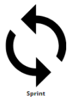

Eventos

Durante a Sprint é estipulado o tempo para o desenvolvimento do produto, e a equipe tenta ter entregas menores na reunião diária, na definição das issues, do que irão produzir e tudo o que é dividido ou esperado.
Durante a Sprint é estipulado o tempo para o desenvolvimento do produto, e a equipe tenta ter entregas menores na reunião diária, na definição das issues, do que irão produzir e tudo o que é dividido ou esperado.

Daily Scrum: durante a sprint acontece a reunião diária, na qual a equipe de desenvolvimento da Fábrica se reúne com o gerente com o objetivo de discutir o que foi feito, o que será feito e se há algum impedimento para realizar as atividades. A equipe não segue o Scrum perfeito dia-a-dia porque se o gerente não puder reunir, a equipe de desenvolvimento não para pra reunir e, geralmente o gerente vai organizando as coisas relacionadas a reunião/decisão. Na reunião a equipe define quem vai fazer, como vai ser e se for algo que já foi estudado é definido um prazo. Então dependendo do bug a equipe define a melhor maneira dele ser resolvido e pode ser algo muito simples que não gera muita alteração e eles resolvem no mesmo dia, ou pode ser algo maior e/ou mais complexo que a equipe discute e se planeja para resolver da melhor forma possível, esses são os dois formatos principais de resolver os bugs que encontram.

A revisão da Sprint é realizada ao final de cada Sprint com o objetivo de que um incremento de software funcionando seja entregue e que ele tenha sido testado e que esteja pronto para ser colocado em produção. A equipe da Fábrica de Software faz um review de uma funcionalidade e, ao receber uma demanda é feita a descrição da funcionalidade, de como irá funcionar e ao finalizar, antes de mandar para produção, é feita uma reunião mais detalhada com o gerente para mostrar a aplicação funcionando e testarem juntos.
<< Voltar